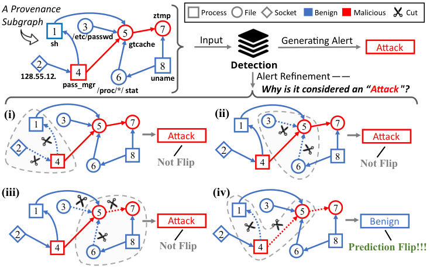
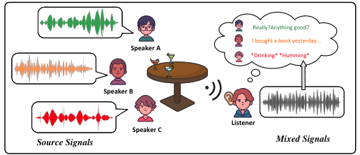
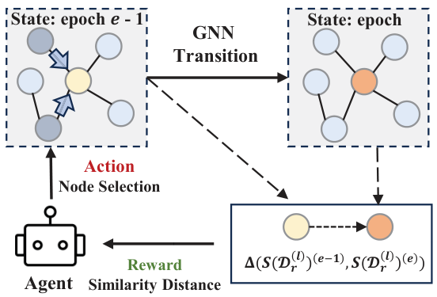
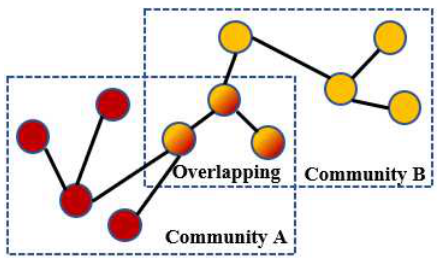
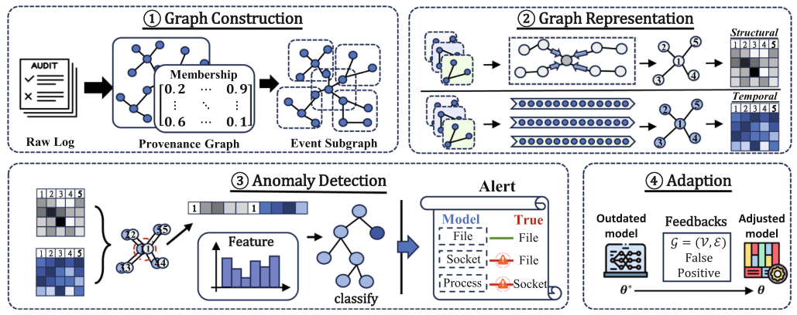

Wei Qiao | 乔伟
I am a Ph.D. student in Cyberspace Security at Xidian University, advised by Prof. Teng Li in Prof. Jianfeng Ma’s group. I am also a Research Assistant in Prof. Yang Liu’s group at Nanyang Technological University (NTU).
I received my master’s degree from the Institute of Information Engineering, Chinese Academy of Sciences (IIE, CAS) in July 2026, advised by Assoc. Prof. Bo Jiang in Prof. Zhigang Lu’s team. I hold a B.E. in Software Engineering from Xidian University.
Research interests: Intrusion Detection · APT Provenance · Agent safety
News
- 2026 I received the National Scholarship for Graduate Students (国家奖学金)!
- 2026 Our paper Cutting the Fuse was accepted to USENIX Security 2026.
- 2026 Our paper Forge was accepted to WWW 2026 as an oral presentation.
- 2025 Our paper Slot was accepted to CCS 2025.
Publications
# Co-first author. * Corresponding author.
LOGSAID: Sentiment analysis-guided advanced persistent threat detection via log provenance analysis.Computer Networks, 2026. |
 Fig. 3 · View figure ↗Cutting the Fuse: Actionable APT Attack Blocking in Provenance-based IDS.Proceedings of the 35th USENIX Security Symposium (USENIX Security), 2026. CCF-ABig 4
|
 Fig. 1b · View figure ↗Forge: A Robust Multi-tab Website Fingerprinting Attack via Blind Source Separation.Proceedings of the ACM on Web Conference 2026 (WWW), 2026. CCF-AOral
|
Btda: A Robust Framework for Encrypted Traffic Classification with Byte-Level TLS Data Augmentation.2026 IEEE International Conference on Acoustics, Speech and Signal Processing (ICASSP), 2026. |
TrafficMoE: Adaptive Multi-Perspective Feature Fusion for Enhancing Malicious Traffic General Detection Capability.2026 IEEE International Conference on Acoustics, Speech and Signal Processing (ICASSP), 2026. |
FLARE: Fine-grained Lateral Movement Detection via Temporal Edge Learning.The 27th International Conference on Web Information Systems Engineering (WISE), 2026. |
 Fig. 5 · View figure ↗Slot: Provenance-Driven APT Detection through Graph Reinforcement Learning.Proceedings of the 2025 ACM SIGSAC Conference on Computer and Communications Security (CCS), 2025, pp. 963-977. CCF-ABig 4
|
 Fig. 4 · View figure ↗SauronEyes: Disentangling Voluminous Logs to Unveil Camouflaged Attack Intentions.IEEE Transactions on Information Forensics and Security (TIFS), 2025. CCF-A
|
 Fig. 2 · View figure ↗Chaos: Robust Spatio-Temporal Fusion for Generalizable APT Provenance Tracing.International Conference on Data Security and Privacy Protection (DSPP), 2025, pp. 507-524. Best Paper Award |
Brewing Vodka: Distilling Pure Knowledge for Lightweight Threat Detection in Audit Logs.Proceedings of the ACM on Web Conference 2025 (WWW), 2025, pp. 2172-2182. |
Sentient: Multi-Scenario Behavioral Intent Analysis for Advanced Persistent Threat Detection.AAAI Conference on Artificial Intelligence (AAAI), 2025. |
Towards Effective Black-Box Attacks on DoH Tunnel Detection Systems.Computer Networks, 2025, pp. 111524. |
PathWatcher: A Path-Based Behavior Detection Method for Attack Detection and Investigation.Computers & Security, 2025, pp. 104563. |
PanThreat: Global Resource-Based Anomaly Detection for APTs.28th International Conference on Computer Supported Cooperative Work in Design (CSCWD), 2025, pp. 135-140. |
DCASI: A Sequence-based Attack Investigation Method Using DTW Contrastive Learning.IEEE International Conference on Acoustics, Speech and Signal Processing (ICASSP), 2025, pp. 1-5. |
LogWF: Anomaly Detection for Distributed Systems Based on Log Workflow Mining.45th IEEE International Conference on Distributed Computing Systems WorkShop (ICDCSW), 2025. |
T-trace: Constructing the APTs Provenance Graphs through Multiple Syslogs Correlation.IEEE Transactions on Dependable and Secure Computing (TDSC), 2023, vol. 21, no. 3, pp. 1179-1195. |
Experience
Education
- Sep. 2026 - Present
- Sep. 2023 - Jul. 2026
Institute of Information Engineering, Chinese Academy of Sciences (IIE, CAS), Group 4 (G4), Laboratory 9
Master's Degree
Advisor: Assoc. Prof. Bo Jiang, in Prof. Zhigang Lu’s team.
- Sep. 2017 - Jun. 2021
Xidian University
Bachelor of Engineering
Software Engineering
Research & Industry
- May. 2026 - Present
- Sep. 2025 - Apr. 2026
Bybit, Risk Control Algorithm Department
Security Algorithm Intern
- Mar. 2023 - Sep. 2023
Institute of Information Engineering, Chinese Academy of Sciences (IIE, CAS)
Research Intern
- Sep. 2022 - Nov. 2022
Huawei, Cloud Computing
Software Development Engineer
- Jun. 2021 - Sep. 2022
Xidian University
Research Assistant
Awards and Honors
- National Scholarship for Graduate Students (国家奖学金, ¥30,000)
Ministry of Education of China, 2026.
- Best Paper Award
International Conference on Data Security and Privacy Protection (DSPP), 2025.